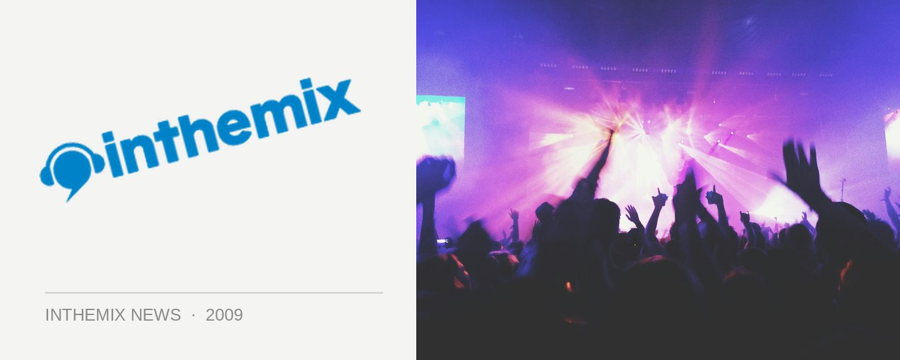

Sensation lineup lands 2pm Friday
CHECK OUT THE SENSATION LINEUP HERE
ID&T’s killer piece of spectacle Sensation returns to Melbourne on Thursday 31st December, and this Friday afternoon at 2pm we’ll finally have the news on who will be providing the soundtrack for the evening. It was already hinted earlier this year that Sebastian Ingrosso would be part of the proceedings, however we’ll have the complete list of DJs to you before the end of the week.
This New Years Eve we’ll be enjoying an ‘Ocean of White’ themed party, the same event that has ventured across Europe over the past 12 months. Boasting a 160 metre stage that covers the entire length of the stadium, with huge water features and effects, there’s also all the lights, lasers and special effects we’ve come to expect from ID&T. And of course, a world-class selection of artists, of which we’ll be finding more about on Friday afternoon.
Be back at ITM at 2pm on Friday for the Sensation lineup! For more information, check out our Festival Page for everything Sensation could possibly need.